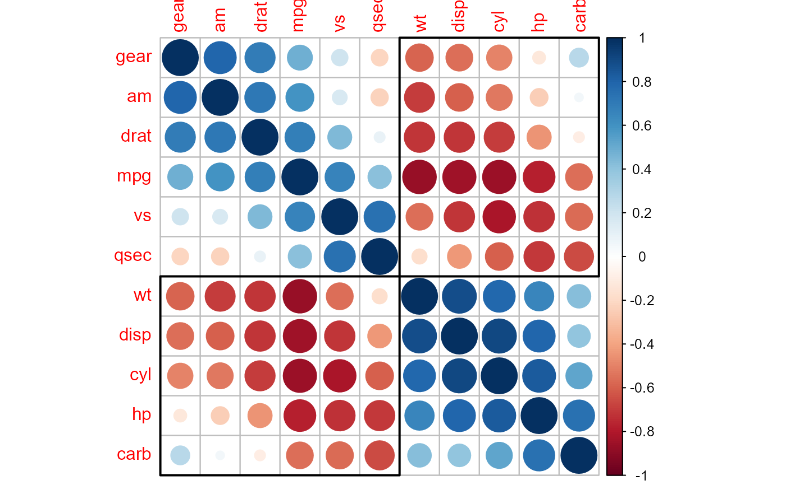
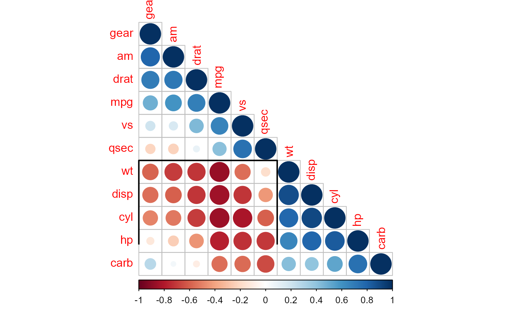
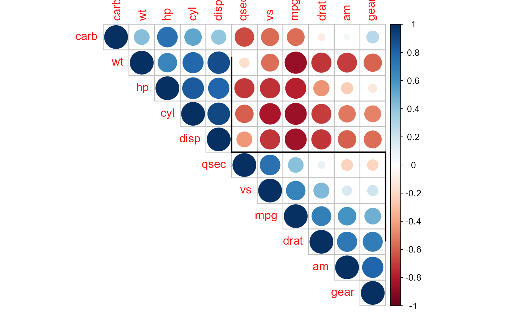
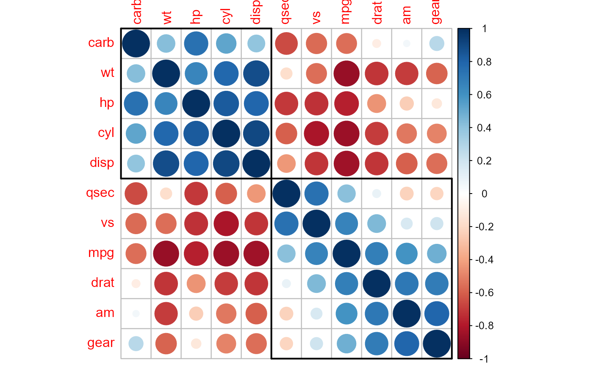
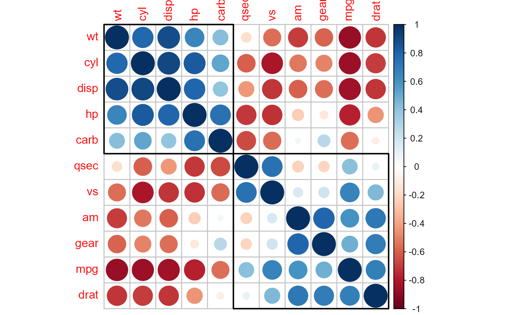
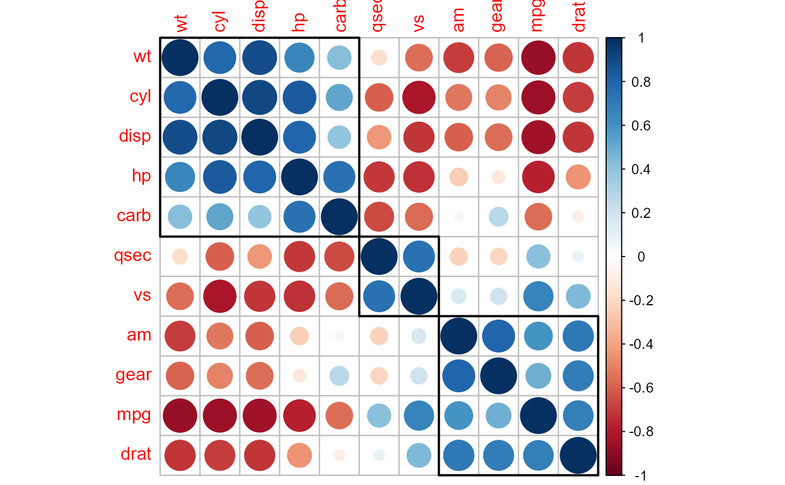
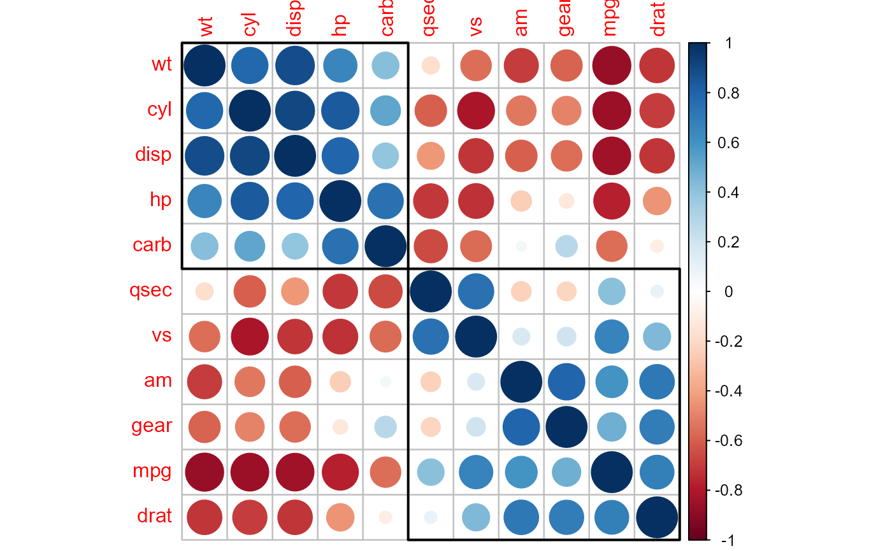
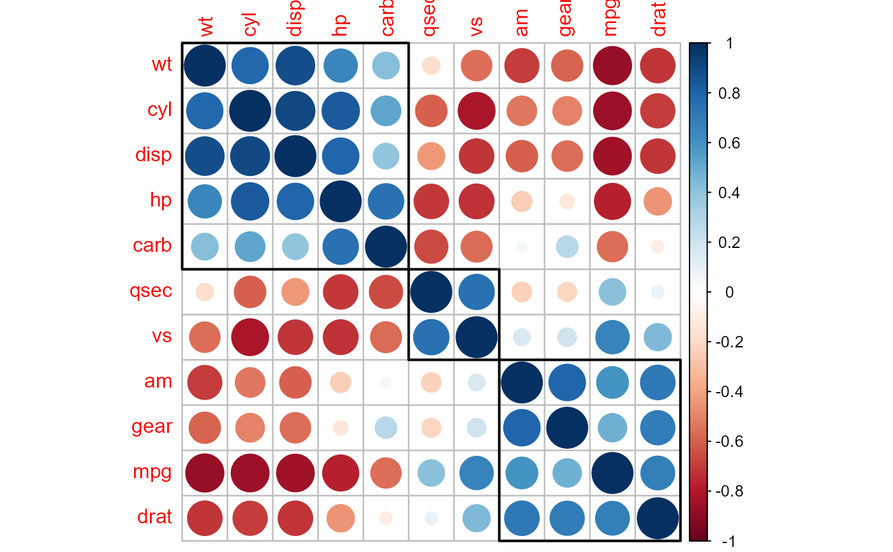

Draw rectangle(s) after the correlation matrix plotted. SUGGESTION: It's more convenient to draw rectangle(s) by using pipe operator `|>` since R 4.1.0.
Usage
corrRect(
corrRes = NULL,
index = NULL,
name = NULL,
namesMat = NULL,
col = "black",
lwd = 2,
...
)Arguments
- corrRes
List of the
corrplot()returns.- index
Vector, variable index of diag rect
c(Rect1from, Rect2from, Rect3from, ..., RectNto)on the correlation matrix graph. It works when the colnames are the same as rownames, or both of them is NULL. It needscorrResinputted.- name
Vector, variable name of diag rect
c(Rect1from, Rect2from, Rect3from, ..., RectNto)on the correlation matrix graph. OIt works when the colnames are the same as rownames. It needscorrResinputted.- namesMat
4-length character vector or 4-columns character matrix, represents the names of xleft, ybottom, xright, ytop correspondingly. It needs
corrResinputted.- col
Color of rectangles.
- lwd
Line width of rectangles.
- ...
Additional arguments passing to function
rect().
Details
corrRect needs one of index, name and namesMat inputted.
While corrRect.hclust can get the members in each cluster
based on hierarchical clustering (hclust).
Examples
data(mtcars)
M = cor(mtcars)
r = rbind(c('gear', 'wt', 'qsec', 'carb'),
c('wt', 'gear', 'carb', 'qsec'))
corrplot(M, order = 'AOE') -> p
corrRect(p, namesMat = r)

# same as using pipe operator `|>` if R version >= 4.1.0:
# corrplot(M, order = 'AOE') |> corrRect(namesMat = r)
r = c('gear', 'carb', 'qsec', 'wt')
corrplot(M, order = 'AOE', type='lower') -> p
corrRect(p, namesMat = r)

# same as using pipe operator `|>` if R version >= 4.1.0:
# corrplot(M, order = 'AOE', type='lower') |> corrRect(namesMat = r)
corrplot(M, order = 'hclust', type = 'upper') -> p
corrRect(p, index = c(1, 6, 11))

# same as using pipe operator `|>` if R version >= 4.1.0:
# corrplot(M, order = 'AOE', type='lower') |> corrRect(index = c(1, 6, 11))
corrplot(M, order = 'hclust') -> p
corrRect(p, name = c('carb', 'qsec', 'gear'))

# same as using pipe operator `|>` if R version >= 4.1.0:
# corrplot(M, order = 'hclust') |> corrRect(name = c('carb', 'qsec', 'gear'))
(order.hc = corrMatOrder(M, order = 'hclust'))
#> [1] 11 6 4 2 3 7 8 1 5 9 10
(order.hc2 = corrMatOrder(M, order = 'hclust', hclust.method = 'ward.D'))
#> [1] 6 2 3 4 11 7 8 9 10 1 5
M.hc = M[order.hc, order.hc]
M.hc2 = M[order.hc2, order.hc2]
par(ask = TRUE)
# same as: corrplot(M, order = 'hclust', addrect = 2)
corrplot(M.hc)
corrRect.hclust(corr = M.hc, k = 2)
 # same as: corrplot(M, order = 'hclust', addrect = 3)
corrplot(M.hc)
corrRect.hclust(corr = M.hc, k = 3)
# same as: corrplot(M, order = 'hclust', hclust.method = 'ward.D', addrect = 2)
corrplot(M.hc2)
corrRect.hclust(M.hc2, k = 2, method = 'ward.D')

# same as: corrplot(M, order = 'hclust', hclust.method = 'ward.D', addrect = 3)
corrplot(M.hc2)
corrRect.hclust(M.hc2, k = 3, method = 'ward.D')

# same as: corrplot(M, order = 'hclust', hclust.method = 'ward.D', addrect = 4)
corrplot(M.hc2)
corrRect.hclust(M.hc2, k = 4, method = 'ward.D')
# same as: corrplot(M, order = 'hclust', addrect = 3)
corrplot(M.hc)
corrRect.hclust(corr = M.hc, k = 3)
# same as: corrplot(M, order = 'hclust', hclust.method = 'ward.D', addrect = 2)
corrplot(M.hc2)
corrRect.hclust(M.hc2, k = 2, method = 'ward.D')

# same as: corrplot(M, order = 'hclust', hclust.method = 'ward.D', addrect = 3)
corrplot(M.hc2)
corrRect.hclust(M.hc2, k = 3, method = 'ward.D')

# same as: corrplot(M, order = 'hclust', hclust.method = 'ward.D', addrect = 4)
corrplot(M.hc2)
corrRect.hclust(M.hc2, k = 4, method = 'ward.D')